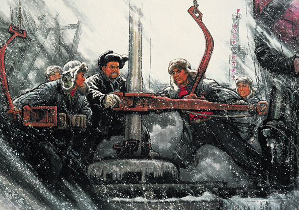

石油工人无冬天

社会主义摸索和探索阶段，是在探索中曲折前进的，虽然这一时期有出现一些大跃进等错误的、不符合社会发展规律的失败阶段，但是这个时期主要还是以成就为主，比如我们的一五计划、我们自主拥有了很多重工业产业。这个时期，我们出现了很多英雄人物，比如邱少云，被誉为“铁人”的王进喜、还有两弹元勋邓稼先、钱学森等。他们身上体现的艰苦奋斗、顽强拼搏精神是值得我们学习的。
社会主义摸索和探索阶段，是在探索中曲折前进的，虽然这一时期有出现一些大跃进等错误的、不符合社会发展规律的失败阶段，但是这个时期主要还是以成就为主，比如我们的一五计划、我们自主拥有了很多重工业产业。这个时期，我们出现了很多英雄人物，比如邱少云，被誉为“铁人”的王进喜、还有两弹元勋邓稼先、钱学森等。他们身上体现的艰苦奋斗、顽强拼搏精神是值得我们学习的。